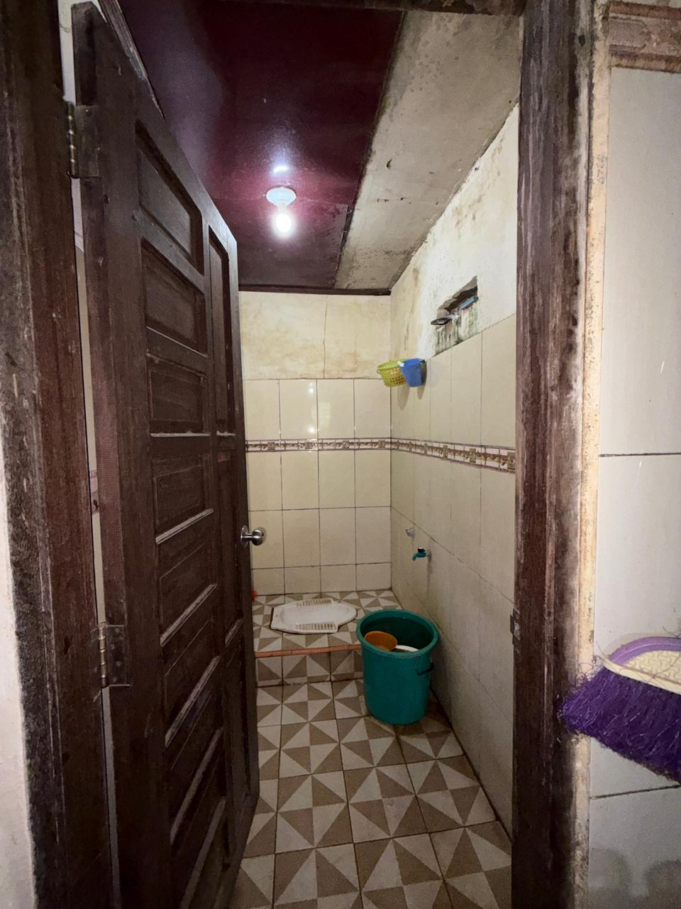
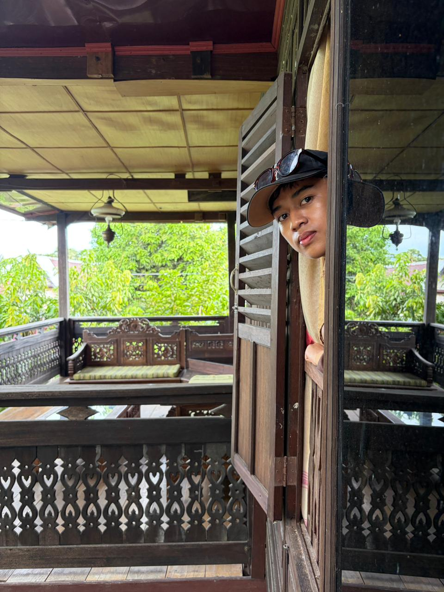
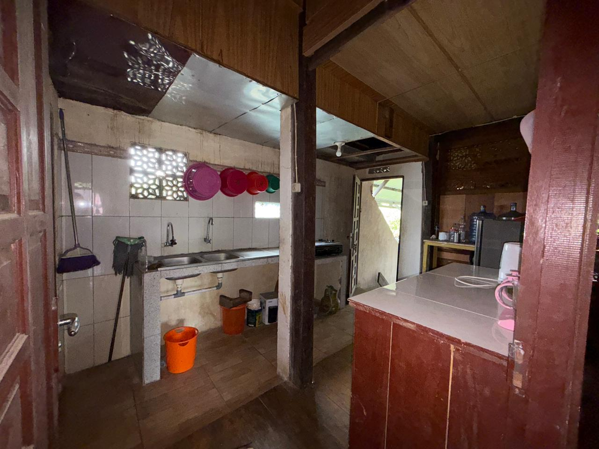
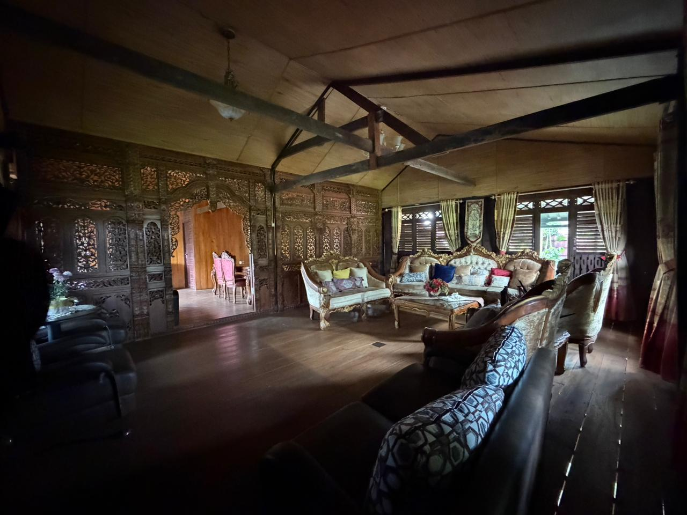

Tarif homestay berbasis masyarakat
Mulai Rp 200.000 / malam
Harga bervariasi menurut tipe homestay. Termasuk sarapan & fasilitas bersama.
RESERVASI SEKARANGTentang Akomodasi
Akomodasi merupakan salah satu komponen penting dalam sistem kepariwisataan yang berfungsi sebagai sarana penunjang bagi wisatawan selama melakukan perjalanan dan kunjungan ke suatu destinasi. Keberadaan akomodasi yang memadai tidak hanya memberikan tempat beristirahat bagi wisatawan, tetapi juga menjadi faktor yang memengaruhi tingkat kepuasan pengunjung terhadap suatu objek wisata. Dalam konsep desa wisata, akomodasi memiliki peran yang lebih luas karena tidak hanya berfungsi sebagai tempat menginap, melainkan juga sebagai media interaksi antara wisatawan dengan masyarakat lokal. Melalui akomodasi berbasis masyarakat, wisatawan dapat memperoleh pengalaman yang lebih autentik terkait kehidupan sosial, budaya, adat istiadat, serta aktivitas keseharian masyarakat setempat.
Desa Wisata Sanrobone yang terletak di Kabupaten Takalar merupakan salah satu desa wisata yang berkembang dengan mengusung konsep wisata sejarah, budaya, dan religi. Keberadaan berbagai situs peninggalan Kerajaan Sanrobone menjadikan desa ini memiliki daya tarik yang unik dibandingkan dengan destinasi wisata lainnya. Berbagai objek wisata seperti Benteng Sanrobone, Balla Lompoa, makam raja-raja, masjid tua, serta berbagai situs sejarah lainnya menjadi alasan utama wisatawan berkunjung ke kawasan ini. Seiring dengan meningkatnya kunjungan wisatawan, kebutuhan terhadap sarana akomodasi menjadi aspek yang semakin penting untuk diperhatikan dalam mendukung pengembangan desa wisata.
Pilihan Homestay
Tinggal bersama masyarakat dan rasakan kehidupan desa secara langsung.

Homestay Bersejarah 01
Mulai Rp 200.000/malam
Homestay Berbudaya 01
Mulai Rp 200.000/malam
Homestay Bersejarah 02
Mulai Rp 250.000/malam
Homestay Berbudaya 02
Mulai Rp 250.000/malamGaleri Homestay
Suasana asli rumah adat panggung yang menjadi tempat menginap wisatawan.








Kondisi & Keunggulan Homestay
Secara umum, kondisi homestay yang terdapat di Desa Wisata Sanrobone masih tergolong sederhana. Bangunan yang digunakan sebagian besar merupakan rumah tinggal masyarakat yang telah disesuaikan untuk menerima tamu. Fasilitas yang tersedia umumnya meliputi kamar tidur, kamar mandi, ruang tamu, serta area makan yang digunakan bersama dengan pemilik rumah. Meskipun fasilitas yang tersedia belum sepenuhnya setara dengan hotel atau penginapan komersial, kondisi tersebut tidak mengurangi nilai pengalaman yang diperoleh wisatawan. Justru kesederhanaan tersebut menjadi salah satu daya tarik karena memberikan suasana yang lebih alami dan mencerminkan kehidupan masyarakat pedesaan yang sesungguhnya.
Salah satu keunggulan utama akomodasi di Desa Wisata Sanrobone adalah suasana lingkungan yang nyaman, aman, dan masih sangat kental dengan nuansa budaya lokal. Wisatawan yang menginap dapat merasakan kehidupan masyarakat secara langsung, mulai dari aktivitas sehari-hari, pola interaksi sosial, hingga berbagai tradisi yang masih dijalankan oleh masyarakat. Pengalaman tersebut menjadi nilai tambah yang tidak selalu dapat diperoleh pada jenis akomodasi modern. Melalui homestay, wisatawan tidak hanya menjadi pengunjung, tetapi juga menjadi bagian dari kehidupan masyarakat selama masa kunjungannya.
Selain memberikan pengalaman budaya yang autentik, homestay di Desa Wisata Sanrobone juga memungkinkan wisatawan untuk mengenal lebih dekat berbagai nilai sejarah yang dimiliki oleh desa tersebut. Lokasi akomodasi yang berada di sekitar kawasan wisata memudahkan wisatawan untuk mengakses berbagai situs sejarah dan budaya yang ada. Wisatawan dapat mengunjungi Balla Lompoa sebagai pusat adat dan peninggalan Kerajaan Sanrobone, melihat kawasan makam kerajaan yang memiliki nilai historis tinggi, serta mengunjungi masjid tua yang menjadi bukti perkembangan agama Islam di kawasan tersebut. Kedekatan antara akomodasi dan objek wisata menjadi salah satu faktor yang mendukung kenyamanan wisatawan selama berada di Desa Wisata Sanrobone.
Fasilitas Homestay
Kebutuhan dasar yang umumnya tersedia di setiap homestay.
Lingkungan & Dampak Ekonomi
Kondisi kebersihan lingkungan secara umum cukup baik. Masyarakat masih menjaga kebersihan kawasan permukiman dan lingkungan sekitar objek wisata. Lingkungan desa yang asri, udara yang relatif bersih, serta suasana yang tenang menjadi faktor yang mendukung kenyamanan wisatawan selama menginap. Kebersihan dan keamanan lingkungan merupakan aspek penting yang harus dipertahankan karena menjadi salah satu indikator kualitas destinasi wisata yang berkelanjutan.
Keberadaan akomodasi juga memberikan dampak ekonomi yang cukup signifikan bagi masyarakat setempat. Melalui pengelolaan homestay, masyarakat memperoleh tambahan pendapatan yang dapat membantu meningkatkan kesejahteraan keluarga. Selain itu, kehadiran wisatawan juga memberikan manfaat bagi pelaku usaha lainnya, seperti penjual makanan dan minuman, pengrajin lokal, penyedia jasa transportasi, serta berbagai usaha kecil yang berkembang di sekitar kawasan wisata. Dengan demikian, pengembangan akomodasi tidak hanya berdampak pada sektor pariwisata, tetapi juga berkontribusi terhadap peningkatan aktivitas ekonomi masyarakat secara keseluruhan.
Hasil Penilaian Akomodasi
Berdasarkan hasil penilaian terhadap berbagai aspek akomodasi yang meliputi ketersediaan kamar, kebersihan, fasilitas pendukung, pelayanan masyarakat, nuansa budaya lokal, aksesibilitas, kenyamanan, keamanan, daya tarik wisata sekitar, dan potensi pengembangan, diperoleh skor total sebesar 40 dari 50. Hasil tersebut menunjukkan bahwa akomodasi di Desa Wisata Sanrobone berada dalam kategori baik. Nilai tersebut mencerminkan bahwa akomodasi yang tersedia telah mampu mendukung kebutuhan dasar wisatawan meskipun masih terdapat beberapa aspek yang perlu ditingkatkan.
Aspek yang memperoleh nilai tertinggi adalah pelayanan masyarakat, nuansa budaya lokal, daya tarik wisata sekitar, dan potensi pengembangan. Hal ini menunjukkan bahwa kekuatan utama akomodasi di Desa Wisata Sanrobone terletak pada pengalaman wisata berbasis budaya dan sejarah yang ditawarkan kepada wisatawan. Sebaliknya, aspek fasilitas pendukung memperoleh nilai yang lebih rendah karena masih membutuhkan peningkatan agar dapat memenuhi standar pelayanan wisata yang lebih baik.
Strategi Pengembangan
Melihat potensi yang dimiliki, pengembangan homestay berbasis budaya menjadi salah satu strategi yang dapat diterapkan di Desa Wisata Sanrobone. Pengembangan tersebut dapat dilakukan melalui peningkatan kualitas fasilitas, pelatihan pengelolaan homestay bagi masyarakat, penyediaan sarana informasi wisata, serta penguatan promosi destinasi melalui media digital. Selain itu, konsep homestay yang mengintegrasikan unsur budaya lokal dapat menjadi daya tarik tersendiri yang membedakan Desa Wisata Sanrobone dari destinasi lainnya di Sulawesi Selatan.
Dalam jangka panjang, pengembangan akomodasi yang terencana dan berkelanjutan diharapkan mampu meningkatkan daya saing Desa Wisata Sanrobone sebagai destinasi wisata unggulan berbasis sejarah, budaya, dan religi. Keberadaan homestay yang dikelola oleh masyarakat dapat menjadi sarana pemberdayaan ekonomi sekaligus media pelestarian budaya lokal. Melalui keterlibatan aktif masyarakat dalam pengelolaan akomodasi, manfaat pembangunan pariwisata dapat dirasakan secara langsung oleh masyarakat setempat.
Secara keseluruhan, akomodasi di Desa Wisata Sanrobone memiliki potensi yang cukup besar untuk terus berkembang seiring dengan meningkatnya kunjungan wisatawan dan perhatian pemerintah terhadap pengembangan desa wisata. Meskipun masih menghadapi berbagai keterbatasan, keberadaan homestay yang berbasis masyarakat telah menunjukkan peran yang penting dalam mendukung aktivitas pariwisata di kawasan tersebut. Dengan peningkatan kualitas fasilitas, penguatan kapasitas sumber daya manusia, serta dukungan berbagai pihak, akomodasi di Desa Wisata Sanrobone berpeluang menjadi salah satu faktor utama yang mendukung terwujudnya desa wisata yang maju, berdaya saing, dan berkelanjutan.
Reservasi Homestay
Hubungi kontak resmi untuk memesan homestay dan mengecek ketersediaan.
Dikelola oleh
Pokdarwis Desa Wisata Sanrobone
Email: desasanrobone22@gmail.com
Alamat & Titik Lokasi
Dusun Sanrobone, Desa Sanrobone, Kec. Sanrobone, Kab. Takalar, Sulawesi Selatan.